Introduction to Computing for the Social Sciences
Session 5 – Algorithms
Winter Semester 2026-2027
Course Outline
- Session 1: Introduction
- Session 2: Information Coding
- Session 3: Data Structures
- Session 4: Software
- Session 5: Algorithms
- Session 6: Recursion
- Session 7: Sorting Algorithms
- Session 8: Time Complexity
- Session 9: Theoretical Computer Science
- Session 10: Databases
- Session 11: Machine Learning
- Session 12: Parallel Programming
- Session 13: Social Science Applications
- Session 14: Exam Review
Outline
- Algorithms
- Representation of Algorithms
- Abstract Data Structures
- Queues and Stacks
- Graphs
Whose contacts, within two steps?
Motivating example A case is confirmed on Monday. Public health needs everyone this person met and everyone those people met, without checking the whole population. On the contact graph of a mid-sized city this is thousands of people, and the answer is needed in seconds.
- “Everyone within two steps” is easy to say, but a machine needs to know which person you look at next and how you know you are finished.
What is the exact recipe to find them and how do you keep from going round in circles?
The network that would not fit
Motivating example You want to store who is friends with whom among the 3 billion users of Facebook. Written as a table of everyone against everyone, this takes 9 × 1018 cells, i.e. about one exabyte at one bit each. Written as a list of friends per user, with about 200 friends each, it takes about 2.4 terabytes and answers the same questions.
9 × 1018cells, as a matrix
3 × 1011friendships, as adjacency lists
~500,000×smaller, same facts
Why are the memory requirements so different and when could they be more similar?
What is an algorithm?
Definition
An algorithm is a self-contained step-by-step set of operations to solve a given problem. Algorithms perform calculation, data processing, and/or automated reasoning tasks.
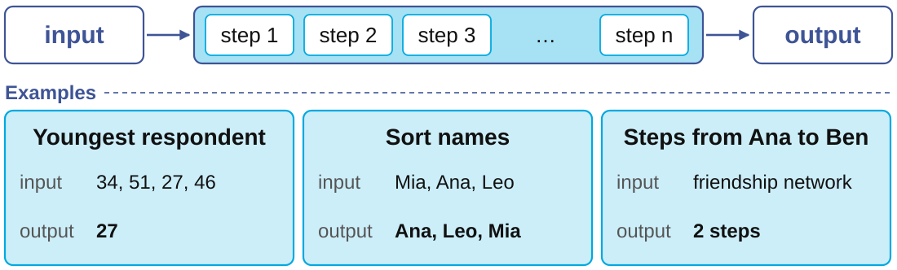
Other uses of the word algorithm
The word algorithm is commonly used nowadays with slightly different meanings, especially in the context of Artificial Intelligence:
- Algorithm as method to fit a predictive model. It can be as simple as least squares to fit linear regression and as complicated as distributed stochastic gradient descent to fit neural networks
- Algorithm as the model after training. This focuses on the predictive model as a program with a behavior that is not carefully designed, but learned from empirical data.
Related terms to these other meanings: algorithmic bias, algorithmic media, machine behavior, algorithm auditing, algorithmic decision-making…
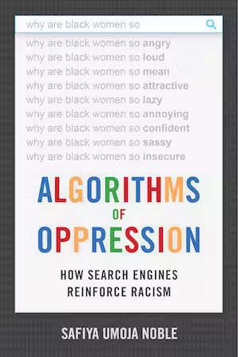
al-Khwarizmi: the namesake of algorithms
Muhammad ibn Musa abu Djafar al-Khwarizmi
(780 – 850, Khwarazm, Uzbekistan)
- Popularized algebra and published the first systematic way to solve linear and quadratic equations
- His book on how to calculate with Hindu-Arabic numerals was translated into Latin with the title Algoritmi de Numero Indorum
- Algoritmi later changed to Algorithmus as a mix with arithmos in Greek (number)
- It is clear that algorithms predate him (e.g. in Babylon, Egypt, India, and Greece)
- He widely popularized the idea of systematic treatment of data (numbers)
- He emphasized doing this in as few steps as possible, thus using a decimal system with pen and paper rather than Roman numerals with an abacus
Example: finding the kth smallest element
Procedure K-SMALLEST-ELEMENT(M, n, k)
Inputs:
M: an array
n: the number of elements in M
k: the rank to find (k = 1 is the minimum)
Result: the k-th smallest element of M
For i = 1 to k:
smallest ← i
For j = i + 1 to n:
If M[j] < M[smallest]
then smallest ← j
swap M[i] with M[smallest]
return M[k]
The idea: in round \(i\), find the smallest of the elements not yet placed and swap it to position \(i\). After \(k\) rounds, position \(k\) holds the \(k\)-th smallest element.
Example: \(M = [34, 51, 27, 46]\), \(k = 2\)
- Round 1 swaps 27 to the front: \([27, 51, 34, 46]\)
- Round 2 swaps 34 to position 2: \([27, 34, 51, 46]\)
- The algorithm returns \(M[2] = 34\)
Properties of algorithms: specification
Procedure K-SMALLEST-ELEMENT(M, n, k) Inputs: M: an array n: the number of elements in M k: the rank to find (k = 1 is the minimum) Result: the k-th smallest element of M For i = 1 to k: smallest ← i For j = i + 1 to n: If M[j] < M[smallest] then smallest ← j swap M[i] with M[smallest] return M[k]
Specification:
- Input specification: the input required so that the output can be produced (many inputs or none)
- Output specification: the result the algorithm produces
In the example (highlighted): the inputs are the array \(M\), its length \(n\) and the rank \(k\). The result is the \(k\)-th smallest element of \(M\).
Properties of algorithms: transferability
Procedure K-SMALLEST-ELEMENT(M, n, k)
Inputs:
M: an array
n: the number of elements in M
k: the rank to find (k = 1 is the minimum)
Result: the k-th smallest element of M
For i = 1 to k:
smallest ← i
For j = i + 1 to n:
If M[j] < M[smallest]
then smallest ← j
swap M[i] with M[smallest]
return M[k]
Transferability:
- The input is given as parameters
- Different instances of the problem must be allowed as inputs
In the example (highlighted): \(M\), \(n\) and \(k\) are parameters, so the same procedure works for an array of any length and for any \(k\) from 1 to \(n\), not for one fixed list.
Properties of algorithms: description and execution
Procedure K-SMALLEST-ELEMENT(M, n, k)
Inputs:
M: an array
n: the number of elements in M
k: the rank to find (k = 1 is the minimum)
Result: the k-th smallest element of M
For i = 1 to k:
smallest ← i
For j = i + 1 to n:
If M[j] < M[smallest]
then smallest ← j
swap M[i] with M[smallest]
return M[k]
Description:
- Finiteness: it must terminate after a finite number of steps
- Definiteness: each step is clear, well defined and precise
Execution: deterministic (same input, same output) or stochastic (a random component makes the output vary)
In the example (highlighted): both loops have fixed bounds, so it stops after at most \(k \cdot n\) steps. Nothing is random, so it is deterministic.
Properties of algorithms: time and memory complexity
Procedure K-SMALLEST-ELEMENT(M, n, k)
Inputs:
M: an array
n: the number of elements in M
k: the rank to find (k = 1 is the minimum)
Result: the k-th smallest element of M
For i = 1 to k:
smallest ← i
For j = i + 1 to n:
If M[j] < M[smallest]
then smallest ← j
swap M[i] with M[smallest]
return M[k]
Time complexity: the effort the algorithm needs, measured by counting key operations such as comparisons
Memory complexity: the memory needed during execution, measured as the maximum space used
In the example (highlighted): the comparison runs fewer than \(k \cdot n\) times. Besides \(M\), the algorithm only stores \(i\), \(j\) and \(smallest\), so its extra memory does not grow with \(n\).
Properties of algorithms: correctness
Procedure K-SMALLEST-ELEMENT(M, n, k)
Inputs:
M: an array
n: the number of elements in M
k: the rank to find (k = 1 is the minimum)
Result: the k-th smallest element of M
For i = 1 to k:
smallest ← i
For j = i + 1 to n:
If M[j] < M[smallest]
then smallest ← j
swap M[i] with M[smallest]
return M[k]
Correctness:
- Partial correctness: whenever the algorithm terminates, its output is correct
- Termination: for correct inputs, it always terminates in a finite number of steps
In the example (highlighted): after round \(i\), positions 1 to \(i\) hold the \(i\) smallest elements in order. So \(M[k]\) is the \(k\)-th smallest for any \(1 \le k \le n\).
Representation of Algorithms
- Algorithms
- Representation of Algorithms
- Abstract Data Structures
- Queues and Stacks
- Graphs
Representation
How to create a new program?
Evaluate your requirements
Define a structure for programming with a method of representation for its algorithm:
- Pseudocode
- Structograms
- Flow diagrams
- UML Unified Modeling Language
Start programming
Representation
How to create a new program?
Evaluate your requirements
Define a structure for programming with a method of representation for its algorithm:
- Pseudocode
- Structograms
- Flow diagrams
- UML Unified Modeling Language
Start programming
Pseudocode
- representation of the steps in an algorithm as a combination of natural language and mathematical notation
- often uses structural conventions of a programming language
- not for machine interpretation but for illustration purposes among humans
Procedure NAME(inputs)
Inputs: input variables
Data: auxiliary variables
Result: output variables
preparation
While not the trivial case:
work
bookkeeping
Good pseudocode
Procedure NAME(inputs)
Inputs: input variables
Data: auxiliary variables
Result: output variables
preparation
While not the trivial case:
work
bookkeeping
Specify input and output if not clear from the context (problem)
If you use auxiliary data structures, comment how to access and edit them
Make sure loops and conditional scopes are unambiguous
Bottom line: using your pseudocode, another human has to be able to follow its instructions to solve the problem with pen and paper (and later program it)
Flowcharts
- graphical representation of execution of an algorithm using symbols and transitions
- shows the steps as boxes, and their order by connecting the boxes with arrows
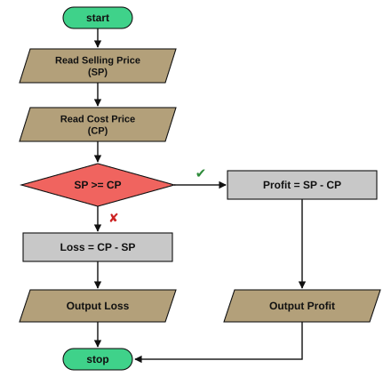
Flowchart symbols
- program start and end
- beginning and ending of a program or sub-process
- data
- process of inputting/entering and outputting/displaying data
- execute operations
- set of operations that changes value, form, or location of data
- conditional split
- conditional operation that determines the program path
- commonly a yes/no question or true/false test
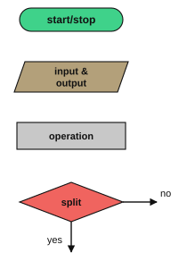
Example: a flowchart with a conditional
- The program starts and reads selling price as SP
- Then reads cost price as CP
- The program tests if SP is larger than or equal CP
- If the condition is true, it takes the right path:
- Calculate profit as SP-CP
- Output profit
- If the condition is false, it takes the bottom path:
- Calculate loss as CP - SP
- Then output loss
- Program ends
Example: a flowchart for the kth smallest element
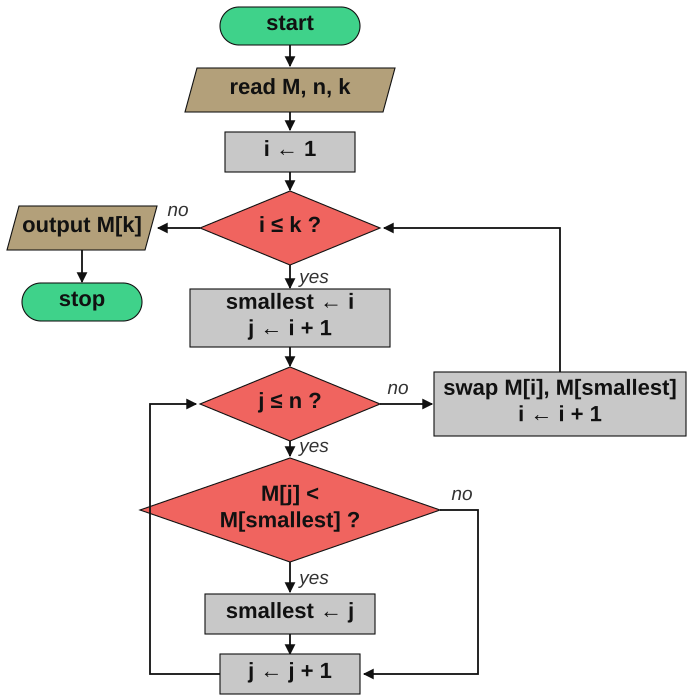
- Start and stop (green): where the program begins and ends
- Data (brown): reads \(M\), \(n\), \(k\) and outputs \(M[k]\)
- Operations (gray): change values, such as the swap
- Conditions (red): \(i \le k\) and \(j \le n\) decide whether a loop runs again, \(M[j] < M[smallest]\) whether a smaller element was found
- Arrows back up are the loops: the outer one returns to \(i \le k\), the inner one to \(j \le n\)
Pseudocode and flowchart side by side
Procedure K-SMALLEST-ELEMENT(M, n, k)
Inputs:
M: an array
n: the number of elements in M
k: the rank to find (k = 1 is the minimum)
Result: the k-th smallest element of M
For i = 1 to k:
smallest ← i
For j = i + 1 to n:
If M[j] < M[smallest]
then smallest ← j
swap M[i] with M[smallest]
return M[k]
Abstract Data Structures
- Algorithms
- Representation of Algorithms
- Abstract Data Structures
- Queues and Stacks
- Graphs
Abstract Data Structures
- Characteristics
- represent data in a way best suited to our (algorithmic) needs
- arrangement, coding and link among data matter
- allow for administration and access to data in an efficient way
- exact specification is dependent on implementation and the use case
- represent data in a way best suited to our (algorithmic) needs
- We already saw a number of abstract data structures
- arrays
- linked lists
- binary search trees
- associative arrays (= dictionaries)
- Choice of data structure matters a lot for performance of specific algorithms
- we will see illustrative examples next
Queues
- Linear data structure following the FIFO principle, i.e. First In, First Out
- Two operations:
- ENQUEUE(\(Q\), \(v\)) adds element \(v\) to the rear of the queue \(Q\)
- DEQUEUE(\(Q\)) removes and returns the element at the front of the queue \(Q\)
- Example applications:
- processing requests in order
- having several queues for priority
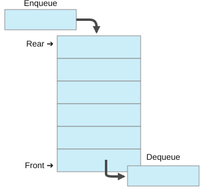
Stacks
- Linear data structure following the LIFO principle, i.e. Last In, First Out
- Two operations:
- PUSH(\(S\), \(v\)) adds an element \(v\) to the top of the stack \(S\)
- POP(\(S\)) removes and returns the most recently added element, i.e. the top of the stack \(S\)
- Example applications:
- Stack segment of the memory
- management of layered execution of sub-routines
- Recursion, with more details in the Recursion session
- Stack segment of the memory
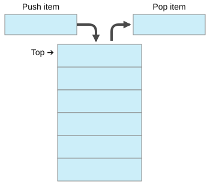
Graphs: motivation
Leonhard Euler: Seven bridges of Königsberg
Problem: Find a path that uses every bridge exactly once and ends in the same place.
Example of a graph representation in a problem that motivated graph theory
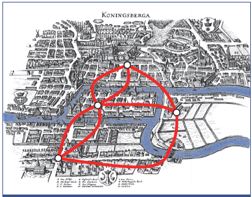
By Peter Berger: Einführung in die Graphentheorie
Graph examples
Many real-world structures can be represented as a graph. Examples are:
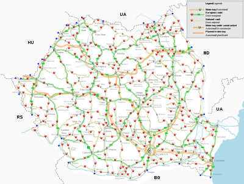
A road map
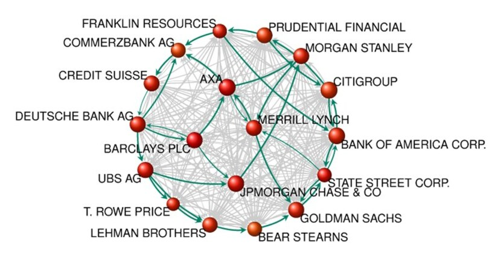
Company ownerships
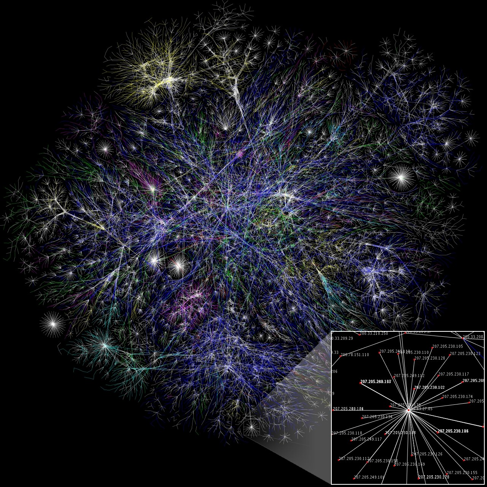
The Internet
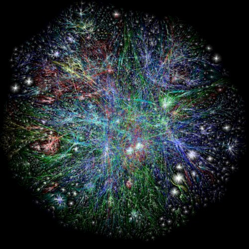
The Web
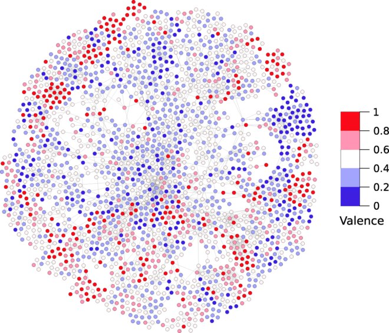
Word associations
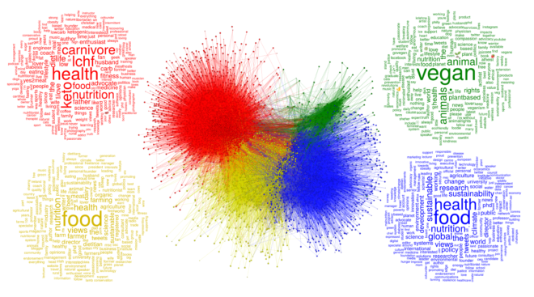
Social relations
Graphs
- consist of vertices and edges
- especially suitable to represent interdependencies between data points
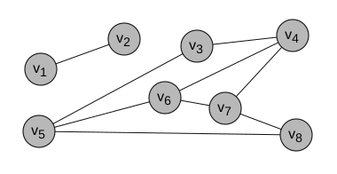
Graphs: vertices and edges
- vertices represent any object
- cities, physical states, atoms, steps in a process, persons
- can be labeled or not
- edges represent the relationship between nodes
- roads between cities, transitions between physical states, atomic bonds etc.
- edges can have labels and variables, for example
- physical distance (e.g. 2 Km in a map)
- type of connection (e.g. friends or enemies)
- weight of connection (e.g. strong versus weak)
- can be directed or undirected
Graphs: Formalization
A graph \(G\) is a tuple \(G = (V, E)\), where
- \(V\) is the set of all vertices
- \(E\) is the set of all edges
- For directed graphs, \(E\) consists of ordered pairs \((v_1, v_2)\), i.e., the edge goes from \(v_1\) to \(v_2\)
- For undirected graphs, \(E\) consists of unordered pairs \(\{v_1, v_2\}\)
- How do we represent graphs as an abstract data structure?
Adjacency Matrix
Definition of Adjacency Matrix
Two vertices \(v, w \in V\) of a graph \(G = (V, E)\) are adjacent if they are connected by an edge \(\{v, w\} \in E\). The adjacency matrix \(A(G)\) has \(a_{v,w} = 1\) if \(\{v, w\} \in E\) and \(a_{v,w} = 0\) otherwise.
\[A(G) = \begin{array}{c|cccccccc} & v_1 & v_2 & v_3 & v_4 & v_5 & v_6 & v_7 & v_8\\\hline v_1 & 0&1&0&0&0&0&0&0\\ v_2 & 1&0&0&0&0&0&0&0\\ v_3 & 0&0&0&1&1&0&0&0\\ v_4 & 0&0&1&0&0&1&1&0\\ v_5 & 0&0&1&0&0&1&0&1\\ v_6 & 0&0&0&1&1&0&1&0\\ v_7 & 0&0&0&1&0&1&0&1\\ v_8 & 0&0&0&0&1&0&1&0 \end{array}\]
Adjacency list
Adjacency list: Alternative representation to adjacency matrix
- array of vertices in which all neighbors are stored as a linear list
- compressed representation of an adjacency matrix where all zeros have been eliminated
- more memory efficient for sparse graphs
| \(v_1\) | \(\rightarrow v_2\) |
| \(v_2\) | \(\rightarrow v_1\) |
| \(v_3\) | \(\rightarrow v_4 \rightarrow v_5\) |
| \(v_4\) | \(\rightarrow v_3 \rightarrow v_6 \rightarrow v_7\) |
| \(v_5\) | \(\rightarrow v_3 \rightarrow v_6 \rightarrow v_8\) |
| \(v_6\) | \(\rightarrow v_4 \rightarrow v_5 \rightarrow v_7\) |
| \(v_7\) | \(\rightarrow v_4 \rightarrow v_6 \rightarrow v_8\) |
| \(v_8\) | \(\rightarrow v_5 \rightarrow v_7\) |
Adjacency Matrix vs Adjacency List
- Does an edge exist between \(v_i\) and \(v_j\)?
- the matrix gives direct access
- the list iterates through the neighbors
- How many edges does \(v_i\) have?
- the matrix iterates through all vertices
- the list iterates only through the neighbors
- Adjacency lists are more memory efficient for sparse networks, i.e. networks with few edges per node
The network that would not fit, calculated Facebook has about \(n = 3 \times 10^9\) users with about 200 friends each.
- Adjacency matrix: \(n^2 = 9 \times 10^{18}\) cells at one bit each, i.e. about 1.1 exabytes
- Adjacency lists: \(3 \times 10^{11}\) friendships, each stored twice, i.e. \(6 \times 10^{11}\) entries of 4 bytes, about 2.4 terabytes
- The lists are about 500,000 times smaller and hold the same facts
Examples of Graph Problems
- Shortest paths and distances between nodes
- Connected subgraphs, with a path between every two of their nodes
- Central nodes, with the shortest average distance to the others
- Spanning trees that connect all nodes with the fewest edges
- Coloring nodes so that no two neighbors share a color
- Isomorphism: can two graphs be mapped onto each other?
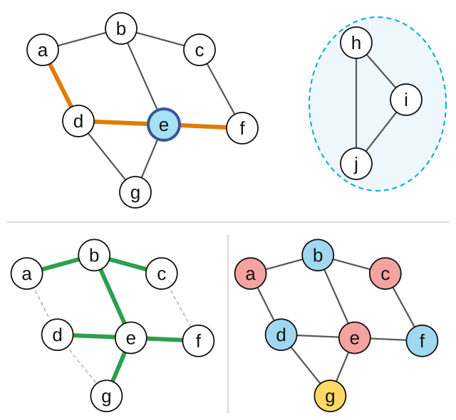
Example: Finding distances
Problem: given a source node (also called starting node) \(s\), find all nodes reachable from it and a shortest path to each of them
Let’s consider this undirected graph \(G = (V, E)\) with
- \(V = \{a,b,c,d,e,f,g\}\)
- \(E = \{\{a,e\}, \{e,b\}, \{b,c\}, \{c,f\},\) \(\{c,g\}, \{d,g\}, \{e,f\}\}\)
- source node \(s = c\)
\(\rightarrow\) To solve it we use the Breadth-First Search (BFS) algorithm
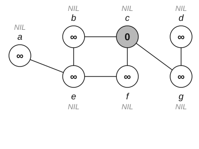
Algorithm: Breadth-First Search
The first step is to initialize the graph with the INITIALIZE-BFS(\(G\), \(s\)) procedure
Procedure INITIALIZE-BFS(G, s)
Inputs:
G: an undirected graph
s: the starting node
Result: the graph is initialized for a search from s
For each vertex u in G.V \ {s}:
color[u] ← WHITE
d[u] ← ∞ # distance
π[u] ← NIL # parent
color[s] ← GRAY
d[s] ← 0
π[s] ← NIL
Initialized with starting node \(s = c\). The distance is inside each node, its name above or below it, and its parent in gray capitals. The fill is the color: \(c\) is GRAY and all other nodes are WHITE.
Algorithm: Breadth-First Search
Procedure BFS(G, s)
Inputs:
G: an undirected graph
s: the starting node
Result: every node reachable from s stores its distance d to s and its parent π
INITIALIZE-BFS(G, s)
Q ← ∅
ENQUEUE(Q, s)# put s in the queue Q
While Q ≠ ∅:
u ← DEQUEUE(Q)# take the next element from the queue Q
For each vertex v in neighbors(u):# check all neighbors of u
If color[v] = WHITE# only continue if v has not been seen yet
then color[v] ← GRAY# mark v as seen
d[v] ← d[u] + 1# one step further than u
π[v] ← u# u is the parent of v
ENQUEUE(Q, v)# put v in the queue Q
color[u] ← BLACK# all neighbors of u have been processed
Algorithm: Breadth-First Search
Next initialize the Queue \(Q\)
Procedure BFS(G, s) Inputs: … Result: … INITIALIZE-BFS(G, s) Q ← ∅ ENQUEUE(Q, s) While Q ≠ ∅: u ← DEQUEUE(Q) For each vertex v in neighbors(u): If color[v] = WHITE then color[v] ← GRAY d[v] ← d[u] + 1 π[v] ← u ENQUEUE(Q, v) color[u] ← BLACK
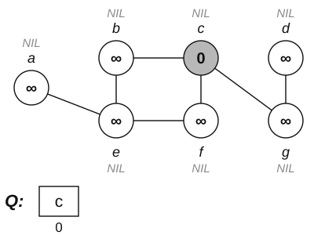
Algorithm: Breadth-First Search
Iterate through the first while-loop for \(u \leftarrow c\)
Procedure BFS(G, s) Inputs: … Result: … INITIALIZE-BFS(G, s) Q ← ∅ ENQUEUE(Q, s) While Q ≠ ∅: u ← DEQUEUE(Q) For each vertex v in neighbors(u): If color[v] = WHITE then color[v] ← GRAY d[v] ← d[u] + 1 π[v] ← u ENQUEUE(Q, v) color[u] ← BLACK
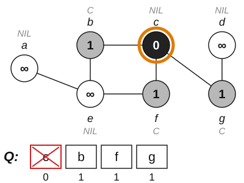
Algorithm: Breadth-First Search
Iterate through the next while-loop for \(u \leftarrow b\) (b is next in the queue because of FIFO)
Procedure BFS(G, s) Inputs: … Result: … INITIALIZE-BFS(G, s) Q ← ∅ ENQUEUE(Q, s) While Q ≠ ∅: u ← DEQUEUE(Q) For each vertex v in neighbors(u): If color[v] = WHITE then color[v] ← GRAY d[v] ← d[u] + 1 π[v] ← u ENQUEUE(Q, v) color[u] ← BLACK
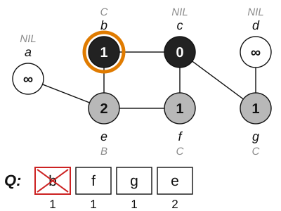
Algorithm: Breadth-First Search
Iterate through the next while-loop for \(u \leftarrow f\)
Procedure BFS(G, s) Inputs: … Result: … INITIALIZE-BFS(G, s) Q ← ∅ ENQUEUE(Q, s) While Q ≠ ∅: u ← DEQUEUE(Q) For each vertex v in neighbors(u): If color[v] = WHITE then color[v] ← GRAY d[v] ← d[u] + 1 π[v] ← u ENQUEUE(Q, v) color[u] ← BLACK
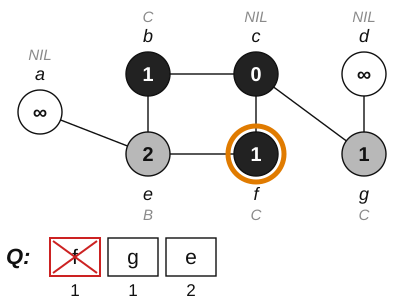
Algorithm: Breadth-First Search
Iterate through the next while-loop for \(u \leftarrow g\)
Procedure BFS(G, s) Inputs: … Result: … INITIALIZE-BFS(G, s) Q ← ∅ ENQUEUE(Q, s) While Q ≠ ∅: u ← DEQUEUE(Q) For each vertex v in neighbors(u): If color[v] = WHITE then color[v] ← GRAY d[v] ← d[u] + 1 π[v] ← u ENQUEUE(Q, v) color[u] ← BLACK
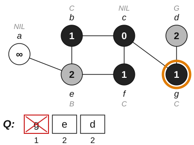
Algorithm: Breadth-First Search
Iterate through the next while-loop for \(u \leftarrow e\)
Procedure BFS(G, s) Inputs: … Result: … INITIALIZE-BFS(G, s) Q ← ∅ ENQUEUE(Q, s) While Q ≠ ∅: u ← DEQUEUE(Q) For each vertex v in neighbors(u): If color[v] = WHITE then color[v] ← GRAY d[v] ← d[u] + 1 π[v] ← u ENQUEUE(Q, v) color[u] ← BLACK
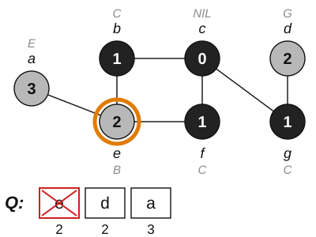
Algorithm: Breadth-First Search
The while-loop for \(u \leftarrow e\) finishes
Procedure BFS(G, s)
Inputs: …
Result: …
INITIALIZE-BFS(G, s)
Q ← ∅
ENQUEUE(Q, s)
While Q ≠ ∅:
u ← DEQUEUE(Q)
For each vertex v in neighbors(u):
If color[v] = WHITE
then color[v] ← GRAY
d[v] ← d[u] + 1
π[v] ← u
ENQUEUE(Q, v)
color[u] ← BLACK
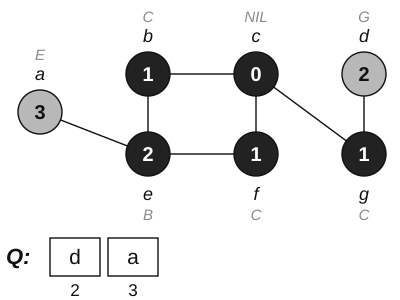
Algorithm: Breadth-First Search
Iterate through the next while-loop for \(u \leftarrow d\)
Procedure BFS(G, s) Inputs: … Result: … INITIALIZE-BFS(G, s) Q ← ∅ ENQUEUE(Q, s) While Q ≠ ∅: u ← DEQUEUE(Q) For each vertex v in neighbors(u): If color[v] = WHITE then color[v] ← GRAY d[v] ← d[u] + 1 π[v] ← u ENQUEUE(Q, v) color[u] ← BLACK
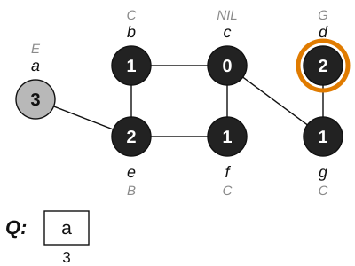
Algorithm: Breadth-First Search
Iterate through the next while-loop for \(u \leftarrow a\). The queue is empty, so BFS stops
Procedure BFS(G, s) Inputs: … Result: … INITIALIZE-BFS(G, s) Q ← ∅ ENQUEUE(Q, s) While Q ≠ ∅: u ← DEQUEUE(Q) For each vertex v in neighbors(u): If color[v] = WHITE then color[v] ← GRAY d[v] ← d[u] + 1 π[v] ← u ENQUEUE(Q, v) color[u] ← BLACK
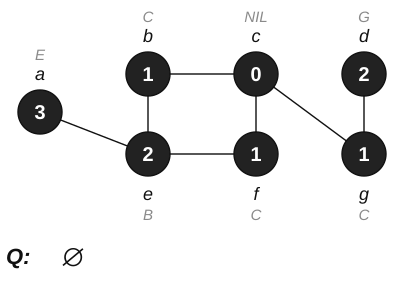
Why does this matter? Practical Python examples
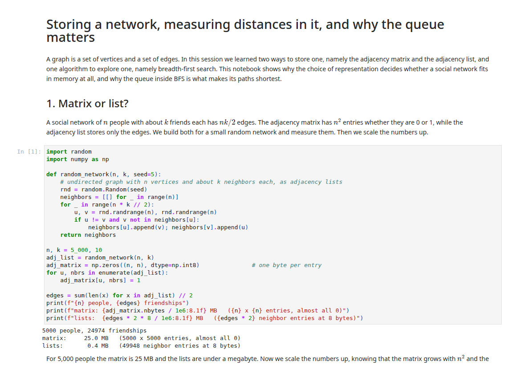
- Matrix or list: the memory that both representations need for a network of 100,000 people
- BFS and six degrees: the distances from one person to everyone else in a network of 5,000 people
- Queue or stack: changing one method call makes the recorded distances wrong
Summary
- An algorithm is a finite, well-defined sequence of steps
- It needs a clear specification and must be finite, definite and correct
- Pseudocode and flowcharts describe algorithms for humans
- Queues are first in, first out; stacks are last in, first out
- A graph \(G = (V, E)\) is stored as an adjacency matrix or adjacency lists
- Breadth-first search uses a queue to find shortest distances
Next session: Recursion

Session 05Introduction to Computing for the Social SciencesWinter Semester 2026-2027